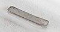

technetium

Definition: Technetium is a chemical element with the symbol Tc and atomic number 43. It is the lightest element whose isotopes are all radioactive. All available technetium is produced as a synthetic element. Naturally occurring technetium is a spontaneous fission product in uranium ore and thorium ore, the most common source, or the product of neutron capture in molybdenum ores. This silvery gray, crystalline transition metal lies between manganese and rhenium in group 7 of the periodic table, and its chemical properties are intermediate between those of both adjacent elements. The most common naturally occurring isotope is 99Tc, in traces only.
Source: Wikipedia
Wikipedia Page
Wikidata Page